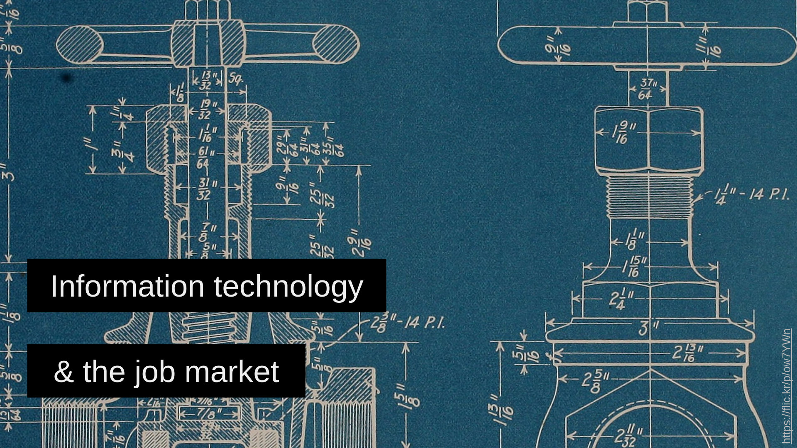

Talks
Information technology & the job market
Invited lecture that reached ~400 students in 7 Computer Science university departments and 1 career day.

Abstract
The job market is not transparent. What does a computer science student need to know to be prepared for their first career choices? Salary trends will be analysed, both generally and specifically for the information technology sector. Useful steps that could be performed during studies will be presented. Finally, the “first job” job hunt will be discussed, in an effort to make the process a bit less stressful. The speaker will be happy if students get exposed to a couple of ideas that will be useful for their future careers.
(Greek) Η αγορά εργασίας είναι αρκετά αδιαφανής. Τί πρέπει να γνωρίζει και πώς μπορεί να προετοιμαστεί βέλτιστα ένας φοιτητής/τρια πληροφορικής για τις πρώτες επαγγελματικές του επιλογές; Θα αναλυθούν μισθολογικές τάσεις στην αγορά εργασίας, τόσο γενικά όσο ειδικά για την πληροφορική. Επίσης θα παρουσιαστούν χρήσιμα βήματα που μπορούν γίνουν κατά την διάρκεια των πανεπιστημιακών σπουδών. Τέλος θα συζητηθεί η αναζήτηση της “πρώτης δουλειάς” ώστε η διαδικασία να γίνει λιγότερο αγχωτική. Ο ομιλητής θα είναι χαρούμενος αν οι φοιτητές/τριες ακούσουν ιδέες που θα φανούν χρήσιμες στην μετέπειτα επαγγελματική τους σταδιοδρομία.
Lectures
- Hellenic Open University, Dept. of Informatics, Careers office, 2022/06, slides
-
University of the Peloponnese, Researcher and Engineer Career Day, 2022/05, slides
-
University of Aegean, Dept. of Information and Communication Systems Engineering, Yannis Charalabidis, 2022/04, slides
-
Athens University of Economics and Business, Dept. of Management Science and Technology, Diomidis Spinellis, 2022/01, slides
-
Aristotle University of Thessaloniki, Dept. of Informatics, Keramidas Georgios, 2021/11, slides
-
University of Thessaly, Dept. of Electrical & Computer Engineering, Dimitrios Katsaros, 2021/04, slides
- University of Piraeus, Dept. of Informatics, Yannis Theodoridis - DataStories Lab, 2020/11, Youtube video, slides